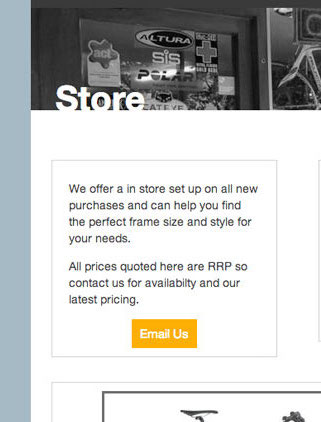
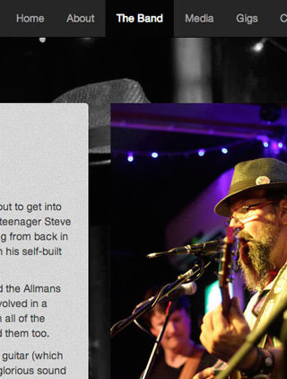
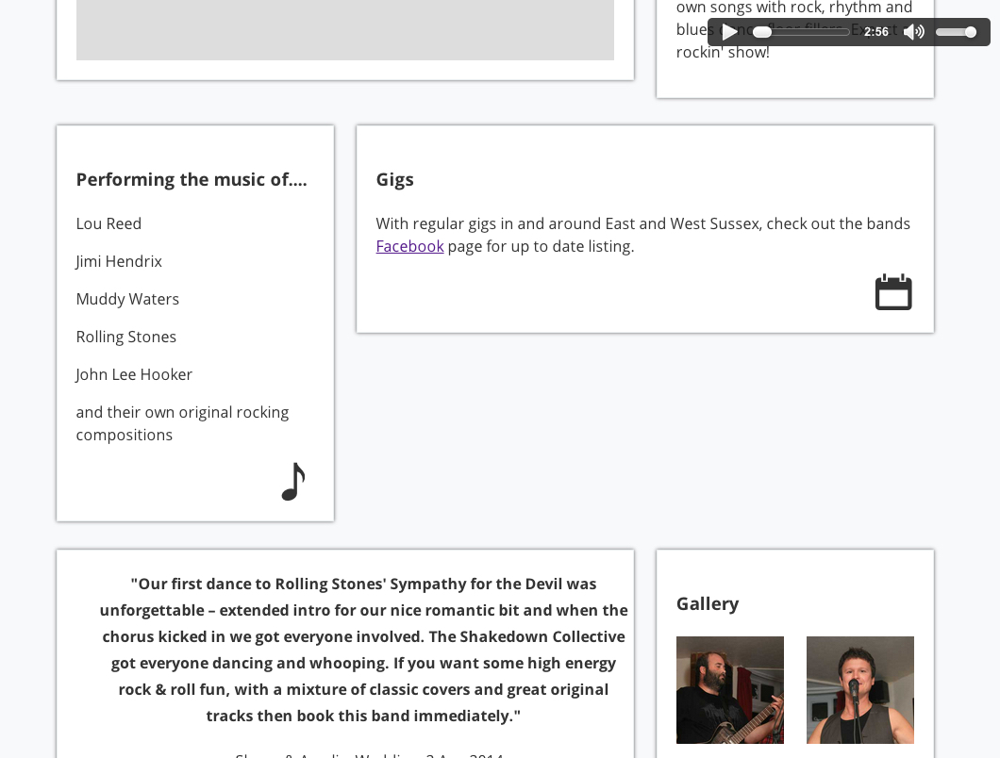
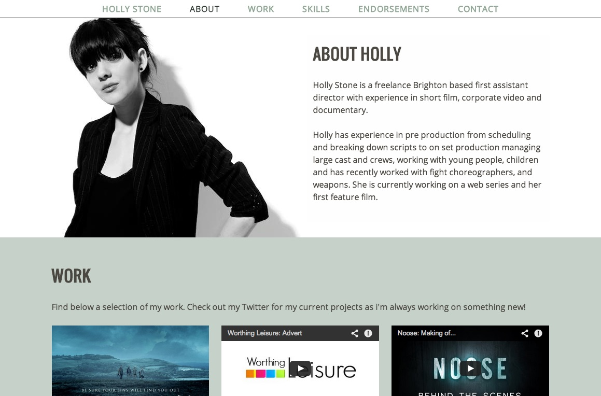

Web Design and development
Here's a few of my personal favourite designs.
I built a custom wordpress theme for this bricks and mortar bike shop. The brief was to provide an online catalougue without ecommerce functionality, to encourage customers to contact or visit the shop in person. I really wanted to convey the benefits of using a local shop and its friendly staff.
I created my own Wordpress plugin as I could not find all of the functionality required. The code is now open-sourced and availble on Github.
This band wanted a site that could host far more information than their popular Facebook page.
I tried to stick away from modern flat design trends here as it does not suit the bands blues sound.
Organising the wealth of information whilst keeping the navigation simple was the main challenge here.
The site is built on wordpress and allows the band members to update all content including upcoming gigs.
View Site This one page showcase for local band ‘The Shakedown Collective’ utilises CSS3 animations (and a little help from jQuery) for an exciting and user engaging experience.
A HTML5 audio player keeps the code clean and semantic.
View Site A modern, one page scrolling portfolio site. This site was created tothe specifications set by Holly. She wanted a sleek and simple site to promote herself and her work. The animated scrolling and active menu items make it a fun site to explore.
